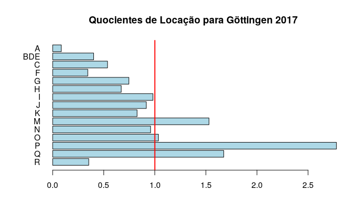

5 Extra
5.1 Análise Econômica Regional com pacote REAT
5.1.1 Introdução
Nesta seção, introduzeremos ao leitor as possibilidades de se realizar análises econômicas regionais no R, utilizando o pacote REAT - Regional Economic Analysis Toolbox. Este pacote fornece métodos para:
Identificar disparidades regionais, por meio de indicadores de concentração e/ou dispersão;
Medir disparidades regionais ao longo do tempo;
Medir aglomerações, isto é, especialização de regiões e concentração espacial industrial;
medidas pontuais de clusterização e acessibilidade;
crescimento regional, especialmente análise shift_share.
Infelizmente, nem todas as funcionalidades do pacote REAT, poderão ser abordadas nesta apostila, mas você poderá sempre recorrer a documentação do pacote e de outros para utilizar outras funcionalidades que possa vir a utilizar no futuro.
5.1.2 Concentração e dispersão
Antes de tudo vamos instalar e carregar o pacote:
Todas as funções que calculam medidas de concentração/dispersão presentes no pacote REAT funcionam de forma semelhante: elas precisam de pelo menos um argumento, um vetor numérico de tamanho \(n\), contendo a variável de interesse x (ex: renda) com \(i\) observações (ex: regiões), onde \(i = 1,...,n\). Estes dados podem ser vetores distintos ou colunas de uma tibble, data frame ou matriz.
Pode ser utilizado ainda o argumento opcional weighting, que atribui pesos a variável x, dependendo do valor de \(i\). O argumento weighting também deve ser um vetor numérico de tamnho \(n\).
5.1.2.1 Aplicação
Para a prática, vamos utilizar dados que acompanham o pacote REAT, referentes à inequidade de oferta de serviços de saúde em dois condados alemães: Göttingen (Goettingen) e Northeim.
O dataset GoettinggenHealth2 contém os dados de oferta de serviços de saúde, tamanho de população e localização geográfica de 420 distritos.
Inicialmente, carregamos o dataset e verificamos a estrutura de nossos dados.
##
## Attaching package: 'REAT'## The following object is masked from 'package:readr':
##
## spec## 'data.frame': 420 obs. of 7 variables:
## $ district: int 1 2 3 4 5 6 7 8 9 10 ...
## $ pop : num 3102 995 310 446 617 ...
## $ lat : num 51.6 51.6 51.6 51.6 51.5 ...
## $ lon : num 9.75 9.78 9.72 9.81 9.74 ...
## $ phys_gen: num 4 1 0 0 1 0 0 1 0 0 ...
## $ psych : num 0 0 0 0 0 0 0 0 0 0 ...
## $ pharm : num 1 0 0 0 0 0 0 1 0 0 ...As colunas phys_gen, psych e pharm contém as respectivas quantidades de médicos, pscioterapeutas (psicólogos) e farmácias por distrito. Estas são as variáveis de interesse para a análise das disparidades regionais entre os distritos.
Primeiramente, calculamos o coeficiente de Gini e o índice de Herfindahl-Hirschman para a concentração de clínicos gerais, utilizando respectivamente a função gini() e herf():
## [1] 0.8386269## [1] 0.01528053O Gini próximo a \(1\) e o HHI acima de \(1/N = 1/420 =\) 0.002381 indicam sensível desigualdade entre os \(420\) distritos do dataset.
Você pode calcular também as versões normalizadas de ambos os coeficientes/índices. Para isso, basta acrescentar o argumento coefnorm=TRUE.
## [1] 0.8406284## [1] 0.01293036ATENÇÃO: Particularmente no cálculo do coeficiente de Gini (não normalizado) para concentração, o valor máximo do coeficiente não é exatmente \(1\), mas sim \(1 - \frac{1}{n}\), devido à derivação de seu cálculo ter como base a área estabelecida pela curva de Lorenz. Se considerarmos a situação extrema em que uma única pessoa se apropria de toda a renda e as demais \(n-1\) pessoas não recebem nada, a área de desigualdade será um triângulo com base \(1-\frac{1}{n}\) no eixo das abscissas e altura \(h=1\). Neste caso, o índice de Gini será dado por \(G=\frac{\alpha}{0.5}=2\alpha\), sendo \(\alpha\) a área de desigualdade e \(0,5\) o valor máximo atingido por \(\alpha_{max}=\frac{1}{2}\big(1-\frac{1}{n}\big)\) quando o tamanho da população \(n\) tende ao infinito: \(\lim_{n\to\infty}{\alpha_{max} = \lim_{n\to\infty}{\frac{1}{2}\big(1-\frac{1}{n}}\big)} = 0,5\) . Como \(0\le \alpha \le \frac{1}{2}\big(1-\frac{1}{n}\big)\) e \(G = 2\alpha\), temos o índice de Gini variando no intervalo \(0 \le G \le \big(1-\frac{1}{n}\big)\). Por isso, o índice de Gini só poderá ter máximo igual a \(1-\frac{1}{n}\), no caso de seu cálculo exato a partir da Curva de Lorenz. Isso faz com que seja possível calcular uma versão normalizada do coeficiente fazendo \(\frac{n}{n-1}G\). Dessa forma o índice passa a variar no intervalo \([0,1]\). Para saber mais sobre a metodologia de cálculo, recomendam-se as referências desta seção, mais especificamente Hoffman (1998). Cabe destacar que é possível calcular-se o coeficiente de Gini utilizando outras abordagens. Para as demais aplicações (por exemplo npivel de especialização industrial), o pacote REAT empregará outra metodologia de cálculo (funções gini.spec() e gini.conc() para concentração espacial), em que o índice varia exatamente no intervalo \([0,1]\).
Para checar a concentração graficamente, podemos plotar uma Curva de Lorenz rapidamente utilizando a função lorenz() ou mesmo a função gini(x, lc=TRUE). Os argumentos são os mesmos. A diferença é que a função lorenz() traz apenas o gráfico ao passo que gini(x, lc=TRUE) plota o gráfico e imprime na tela o índice de gini para a variável de interesse.

Com gini(x, lc=TRUE, add.lc=TRUE, ...)Podemos inclusive sobrepor as curvas de cada uma dos tipos de profissionais e serviço de saúde com a da população. Iniciaremos com a curv da distribuição da população e acrescentamos as demais.
gini(GoettingenHealth2$pop,
lc = TRUE, lsize = 1, le.col = "black",
lc.col = "orange", lcx = "Participação dos distritos",
lcy = "Participação dos provedores",
lctitle = "Concentração espacial dos prestadores de serviços de saúde",
lcg = TRUE, lcgn = TRUE, lcg.caption = "População 2016:", lcg.lab.x = 0,
lcg.lab.y = 1) ## [1] 0.5840336gini(GoettingenHealth2$phys_gen, lc = TRUE, lsize = 1, add.lc = TRUE,
lc.col = "red", lcg = TRUE, lcgn = TRUE,
lcg.caption = "Clínicos gerais 2016:", lcg.lab.x = 0, lcg.lab.y = 0.85) ## [1] 0.8386269gini(GoettingenHealth2$psych, lc = TRUE, lsize = 1, add.lc = TRUE,
lc.col = "blue", lcg = TRUE, lcgn = TRUE, lcg.caption = "Psicólogos 2016:",
lcg.lab.x = 0, lcg.lab.y = 0.7) 
## [1] 0.9329298Note que, pela aparência dos gráficos, conclui-se que eles são feitos utilizando ggplot2, que é chamado em plano de fundo pelo pacote REAT.
Há diversos outros coeficientes de concentração e disperção no pacote REAT, os quais podem ser calculados de uma só vez por meio da função disp(). Os resultados podem demorar um pouco a serem exibidos devido a quantidade de coeficientes que serão calculados. Note também que informar o parâmetro weighting é uma vantagem, pois o output será mais completo.
## Concentration and dispersion measures
## Note: w = weighted, n = normalized, eq = equivalent number
##
## phys_gen psych pharm
## Gini 0.838626907 0.932929782 0.891547619
## Gini n 0.840628403 0.935156345 0.893675418
## Gini w 0.629454516 0.770895945 0.705628058
## Gini w n 0.630956794 0.772735792 0.707312135
## HHI 0.015280527 0.038494685 0.024166667
## HHI n 0.012930361 0.036199923 0.021837709
## HHI eq 65.442769020 25.977611940 41.379310345
## Hoover 0.721428571 0.883333333 0.838095238
## Hoover w 0.001852337 0.003130602 0.003418787
## Theil NA NA NA
## Theil w NA NA NA
## Coulter 0.049850824 0.123305927 0.065569205
## Atkinson 0.761164110 0.900755425 0.854223763
## Dalton NA NA NA
## SD 1.714506606 1.095496987 0.865286915
## SD w 4.010246439 1.847716870 2.401476794
## CV 2.330397328 3.899226565 3.028504203
## CV n 0.113847359 0.190489683 0.147952112
## Williamson 1.429449565 1.965446423 1.7092886725.1.3 Especialização regional e concentração espacial industrial
Em todas as funções que calculam indicadores de especialização e concentração espacial seguem a seguinte base: \(e_{ij}\) é o nível de emprego na indústria \(i\) e região \(j\). Este valor é comparado a alguma referência, a qual pode ser o nível geral de emprego na região \(j\), \(e_j\) e/ou o nível geral de emprego na indústria \(i\), \(e_i\).
Todas as funções que realizam este tipo de cálculo no pacote REAT requerem, então, pelo menos as informações sobre o nível de emprego em uma ou mais regiões \(j\) em uma ou mais indústrias \(i\), \(e_{ij}\)
5.1.3.1 Aplicação
Vamos analisar a especialização regional da cidade de Göttingen, utilizando os dados contidos no dataset Goettingen. Este data frame apresenta a quantidade de empregos entre 2008 e 2017 em cada uma das indústrias elencadas de A a R (linhas de 2 a 16), sendo que a linha 1 contém o nível geral de emprego em determinado ano, considerando todas as indústrias.
Vejamos antes a tabela de classificações de ativadades econômicas alemãs no ano de 2008 (WZ 2008):
| Código | Atividade |
|---|---|
| A | Agriculture, forestry and fishing |
| B | Mining and quarrying |
| C | Manufacturing |
| D | Electricity, gas, steam and air conditioning supply |
| E | Water supply; sewerage, waste management and remediation activities |
| F | Construction |
| G | Wholesale and retail trade; repair of motor vehicles and motorcycles |
| H | Transportation and storage |
| I | Accommodation and food service activities |
| J | Information and communication |
| K | Financial and insurance activities |
| L | Real estate activities |
| M | Professional, scientific and technical activities |
| N | Administrative and support service activities |
| O | Public administration and defence; compulsory social security |
| P | Education |
| Q | Human health and social work activities |
| R | Arts, entertainment and recreation |
| S | Other service activities |
| T | Activities of households as employers; undifferentiated goods-and services-producing activities of households for own use |
| U | Activities of extraterritorial organisations and bodies |
Vamos carregar o dataset e verificar sua estrutura.
## Classes 'tbl_df', 'tbl' and 'data.frame': 16 obs. of 22 variables:
## $ WZ2008_Code : chr "A-R" "A" "BDE" "C" ...
## $ WZ2008_Name : chr "A-R Insgesamt" "A Land- und Forstwirtschaft, Fischerei" "B+D+E Bergbau, Energie, Wasser" "C Verarbeitendes Gewerbe" ...
## $ Goettingen2008: num 59125 44 446 9116 1611 ...
## $ Goettingen2009: num 59201 39 466 8978 1562 ...
## $ Goettingen2010: num 61524 45 452 9044 1575 ...
## $ Goettingen2011: num 63538 48 458 8886 1575 ...
## $ Goettingen2012: num 63643 47 484 8526 1506 ...
## $ Goettingen2013: num 64351 45 508 8550 1522 ...
## $ Goettingen2014: num 67212 41 495 8372 1308 ...
## $ Goettingen2015: num 67137 43 490 8268 1192 ...
## $ Goettingen2016: num 67818 41 475 7999 1356 ...
## $ Goettingen2017: num 69403 45 466 7874 1334 ...
## $ BRD2008 : num 27695398 215570 545874 6528569 1569359 ...
## $ BRD2009 : num 27603281 218548 549648 6363086 1570440 ...
## $ BRD2010 : num 27966601 220753 552291 6256701 1604017 ...
## $ BRD2011 : num 28643583 226043 546277 6395463 1637168 ...
## $ BRD2012 : num 29280034 231109 551263 6519169 1663477 ...
## $ BRD2013 : num 29615680 236862 547782 6544148 1671811 ...
## $ BRD2014 : num 30174505 244677 543076 6613194 1697305 ...
## $ BRD2015 : num 30771297 247538 536566 6666275 1711831 ...
## $ BRD2016 : num 31443318 246467 535808 6725261 1748807 ...
## $ BRD2017 : num 32164973 248052 538768 6797172 1798954 ...As colunas começando no padrão GoettingerANO referem-se aos empregos na indústria, em cada nível de atividade econômica, na cidade de Göttingen no referido ano, ao passo que as colunas no padrão BRDANO, indicam os empregos na indústria, em cada nível de atividade econômica, para a Alemanha.
Começaremos calculando o Coeficiente de Locação (LQ) para a cidade de Göttingen em 2017 com relação a indústria de manufaturados (_“Verarbeitendes Gewerbe”), representada pela letra C (linha 4), conforme a tabela de atividades econômicas alemã: Para isso, utilizamos a função locq().
locq(Goettingen$Goettingen2017[4], Goettingen$Goettingen2017[1],
Goettingen$BRD2017[4], Goettingen$BRD2017[1]) ## [1] 0.5368737O output apresenta o o coeficiente de locação \(LQ_{ij}\) para 2017, onde \(i\) é a indústria de manufatura e \(j\) é a cidade de Göttingen. Nota-se que o valor é bastante baixo, indicando que a indústria de manufatura tem pouca representatividade na economia de Göttingen, em comparação com a economia alemã.
A seguir, calculamos o LQ para todas as indústrias (A-R, linhas de 2 a 16) no ano de 2017, incluindo um plot simples (argumento plot.results=TRUE).
locq(Goettingen$Goettingen2017[2:16], Goettingen$Goettingen2017[1],
Goettingen$BRD2017[2:16], Goettingen$BRD2017[1],
industry.names = Goettingen$WZ2008_Code[2:16], plot.results = TRUE,
plot.title = "Quocientes de Locação para Göttingen 2017")## Location quotients
## I = 15 industries## LQ
## A 0.08407652
## BDE 0.40085663
## C 0.53687366
## F 0.34366928
## G 0.74603541
## H 0.67117311
## I 0.98141916
## J 0.91654277
## K 0.82650178
## M 1.53027645
## N 0.95843423
## O 1.03509027
## P 2.77790858
## Q 1.67459967
## R 0.35317012
Para medir o nível de especialização industrial de Göttingen utilizando um indicador único, podemos utilizar o coeficiente de Herfindahl-Hirschman herf(), calculando-o separadamente para Göttingen e para a economia Alemã.
## [1] 0.127314## [1] 0.1104567Outras alternativas para se medir o nível de especialização regional são o coeficiente de especialização de Hoover hoover(), e os coeficientes de especialização regional de Gini gini.spec() e de Krugman krugman.spec(), todos utilizando como referência ref os dados da economia alemã na mesma seleção de atividades econômicas.
## [1] 0.2254234## [1] 0.359852## [1] 0.45084695.1.5 Aplicação
Vamos novamente utilizar o dataset Goettingen, contendo os dados de emprego por setor de atividade econômica na cidade de Göttingen e na Alemanha entre 2008 e 2017.
A análise shift-share nos permitirá decompor o crescimento do emprego nos componentes nacional, industrial e regional.
Inicialmente, faremos uma análise estática (método clássico de Dunn) aplicando a função shift():
shift(Goettingen$Goettingen2008[2:16], Goettingen$Goettingen2017[2:16],
Goettingen$BRD2008[2:16], Goettingen$BRD2017[2:16])##
## Shift-Share Analysis
## Method: Dunn
##
## Shift-share components
## Components
## Growth (t1-t) 10411.0000
## National share 9178.1916
## Industrial mix 2204.8202
## Regional share -972.0118
## Net total shift 1232.8084
##
## Calculation for 15 industries
## Regional employment at time t: 56872, at time t+1: 67283 (10411 / 18.30602 %)
## National employment at time t: 27695398, at time t+1: 32164973 (4469575 / 16.13833 %)Nessa análise transversal, nota-se que o emprego em Göttingen cresceu em 10.411 pessoas entre 2008 e 2017. No entanto, nota-se que a maior parte desse crescimento deve-se ao componente nacional, que apresentou valor pouco menor que o da cidade. O regional share apresenta valor negativo, indicando desvantagens locacionais. O valor de industrial mix pode ser atribuído a uma sobrerepresentação de indústrias em crescimento na cidade segundo Wieland (2019).
Os resultados são corroborados pelo método de Gerfin:
shift(Goettingen$Goettingen2008[2:16], Goettingen$Goettingen2017[2:16],
Goettingen$BRD2008[2:16], Goettingen$BRD2017[2:16],
shift.method = "Gerfin")##
## Shift-Share Analysis
## Method: Gerfin
##
## Shift-share components
## Components
## Industrial mix 1.0333810
## Regional share 0.9857591
## Net total shift 1.0186647
##
## Calculation for 15 industries
## Regional employment at time t: 56872, at time t+1: 67283 (10411 / 18.30602 %)
## National employment at time t: 27695398, at time t+1: 32164973 (4469575 / 16.13833 %)Os métodos anteriores somente consideram o crescimento geral em relação aos dados em carater transversal, sem considerar a particularidade de cada setor. Para detalhar os dados por indústria e considerar também efeitos sazonais entre os períodos, utiliza-se o modelo dinâmico e indústria específico shiftid().
Para isso, nós precisaremos de dados para o período inicial time1 e pelo menos para dois períodos seguintes time2. Uma outra diferença da função shiftid() é que podemos informar os nomes dos setores industriais no arumento industry.names, já que a análise é indústria-específica.
# Cuidado!
# transformar em data frame antes (bug do pacote - nao aceita tibble)
Goettingen <- as.data.frame(Goettingen, stringsASFactors = FALSE)
shiftid(Goettingen$Goettingen2008[2:16], Goettingen[2:16, 3:12],
Goettingen$BRD2008[2:16], Goettingen[2:16, 13:22],
time1 = 2008, time2 = 2017,
industry.names = Goettingen$WZ2008_Code[2:16])##
## Dynamic Shift-Share Analysis
## Method: Dunn
##
## Shift-share components
## A BDE C F G H I J K M
## Growth (t1-t) -3.000000 29.00000 -1117.0000 -255.0000 -51.0000 524.0000 470.00000 274.00000 -465.000000 2229.000
## National share 6.103502 -9.46377 254.5217 160.0638 561.7436 368.2053 515.03493 286.32383 6.356612 1821.392
## Regional share -9.103502 38.46377 -1371.5217 -415.0638 -612.7436 155.7947 -45.03493 -12.32383 -471.356612 407.608
## Net total shift -9.103502 38.46377 -1371.5217 -415.0638 -612.7436 155.7947 -45.03493 -12.32383 -471.356612 407.608
## N O P Q R
## Growth (t1-t) 1178.0000 268.0000 1272.0000 4211.000 363.00000
## National share 977.9869 167.9118 1138.5383 3556.692 47.50353
## Regional share 200.0131 100.0882 133.4617 654.308 315.49647
## Net total shift 200.0131 100.0882 133.4617 654.308 315.49647
##
## Calculation for 15 industries
## Regional employment at time t: 56872, at time t+1: 67283 (10411 / 18.30602 %)
## National employment at time t: 27695398, at time t+1: 32164973 (4469575 / 16.13833 %)5.1.6 Referências da seção
Wieland, T. (2019). REAT: A Regional Economic Analysis Toolbox for R. REGION, 6(3), 2019, R1-R57. URL https://doi.org/10.18335/region.v6i3.267. Disponível em: https://openjournals.wu-wien.ac.at/region/paper_267/267.html
Hoffman, R. (1998). Distribuição de renda: medidas de desigualdade e pobreza. São Paulo: Editora da Universidade de São Paulo, 1998.